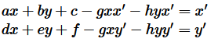
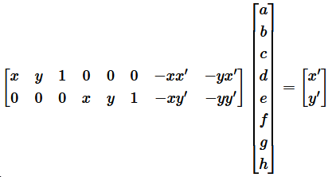
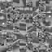

Image Warping and Mosaicing
James Smith, CS 280A, Fall 2024
Shooting Pictures
To create a mosaic we first need a few sets of pictures.
Pittsburgh
These pictures were taken in Pittsburgh during the UIST 2024 conference (where I was sweating having to work on this project until the course staff graciously extended the project) at the Allegheny Landing Park.
San Francisco Street
These pictures were taken on a street in San Francisco. I may or may not live in one of these houses
Berkeley Campus
These pictures were taken on the UC Berkeley campus from the CV Starr East Asian Library.
Compute Homographies, Warp Images
Homography
The goal is to get the matrix H, which is defined by 8 parameters: a, b, c, d, e, f, g, h that satisfies this equation (for a single point).
If we expand this, we get the following equations.
Now we can pull the parameters of the H matrix into a vector and leave the points in matrix form
Note that we need to make one of these for every point in the correspondance. If we specify exactly 4 points that gives us enough equations to solve for the 8 unknowns, but we can make our solution a little more robust to noise by specify more points and using Least Squares to solve the the coefficients.
Once we've solved the equation, we construct the H matrix.
Warping
Now that we have the homography matrix, we can warp one image into the space of another image by applying it. First the corners of the image are warped so that we can determine the size of the destination warp. We compute a polygon mask from these points as well, to help fill in the image in the destination later. A min X and Y value are computed to determine the offset of the warped image. This is added to the homography matrix so that when we do the inverse warp, it will find the pixel values in the right location.
We use the scipy.interpolate.griddata function to interpolate values when doing the inverse warp. We pass in the values of the polygon into this function to sample the source pixels, and copy them to the destination polygon.
Rectification
We can use the homography and warp functions to do an image rectification. This is where we take an image with a rectangular shape in it, and reproject that shape into a rectangle so we can see it strait on. The corners of the square were picked using the correspondence tool, except the same image was used for both. The "correspondance" points on the second image were just set to be a square. I also manually cropped the images so to get a better view of the outcome, because the distorted rectified images were quite large.
Cabinet from Pena
This image was taken in the National Palace of Pena in Portugal. It is an ornate cabinet but I could not get a picture strait on because it was blocked. The computed correspondence file is here.
Mosaic Floor
Because we are working on image mosaics, I thought I would use this picture of a floor mosaic also taken in Portugal. This one was taken at Quinta de Regaleira, a weird occult manor. The computed correspondence file is here.
Image Mosaics
We can now use the warp function to blend multiple overlapping images into a larger mosaic.
Correspondences between the images were manually computed using the tool provided by the course staff (with some modifications made by me in the last project). A set of correspondences between each pair of images was created. Here is the same images plotted with each set of correspondences in a different color.
16 pairs of correspondences were computed between each image. These will be used in the next section to determine the homography between each image.
Pittsburgh
Here is a link to the two correspondance files: file1, file2
Now the two side images can be projected into the image space of the middle image by computing a homography transform for each. A total image size is computed by warping the corners of each image and then a min and max is taken across all corners to determine the final image size. Then each image is copied into it's own version of the final image so they can be blended easily.
If we simply stack these layers into a final image, we can see the output will have seams where the images meet
To fix this we can use a more sophisticated blending. First, blending masks are created based on the position of the images in the final mosaic. Then the scipy.ndimage.distance_transform_edt function is used to compute a mask that contains the distance to the nearest edge (based on the function presented in the lecture, bwdist).
These masks will be used to blend the images in two frequencies. We compute the low frequencies by applying a gaussian filter with a 41 pixel kernel size. The high frequencies are computer by subtracting the low frequencies from the original image.
High Frequencies: To blend the high frequency parts of the image, we blend by looking for the mask that contains the higher value. This allows us to avoid ghosting of high frequency infomation by choosing the high frequency info from one image or the other.
Low Frequency: To blend low frequencies, the masks are used as part of a weighted sum calcultion. A total "weight" at each pixel is calcualted by summing up the masks, and each pixel is blended as a ratio of the mask to the total "weight" at that pixel. Note that this is only done where there is actual pixel information to avoid dividing by the total weight where it is 0.
high_freq = imA * maskA / totalWeight + imB * maskB / totalWeight + imC * maskC / totalWeight
The final high and low frequency parts are summed for the final output.
For the rest of the results we will just show the correspondances, unblended mosaic, and blended mosaic, but the same process was used.
San Francisco Street
Let's test the limits of this algorithm with a set of images that have very different exposure. Here are the correspondance files for this scene: file1, file2.


This one was a challenge because of the extreme differences in exposure, but the blended version actually does a fairly good job at removing the seams.
Berkeley Campus
Here are the correspondance files for this scene: file1, file2.
Feature Matching and Autostitching
We have successfully created mosaics, but it would be nice to automate the feature matching part. Next we explore a method for automatically detecting and matching features in the images.
Harris Corners
A good feature to match on are corners in the image. Corners are useful because small adjustments in position lead to large changes in intensity. For this project we use the Harris Corner Detector, outline in their 1988 paper called A Combined Corner and Edge Detector (over 20k citations, holy moly!). We utilize the harris implementation provided by the course staff.
Here is the Harris corner score image for one of the Pittsburgh images, as well as all of the detected corners in that image. Each corner's "quality" is dependent on the score at the pixel location of that corner.
Adaptive Non-maximal Suppression
We can see that there are far too many corners in the detected image. We can reduce the number of corners using an algorithm called Adaptive Non-maximal Suppression (ANMS) which will choose the highest value corners while maximizes the distance between chosen points. We use the implementation presented in Multi-image matching using multi-scale oriented patches by Brown, Szeliski, and Windor. At a high level, the algorithm follows these steps:
1. Set the radii for each corner to infinity
2. Compute the squared distance between each pairs of corners
3. Set the radius for each corner to the squared distance, but only if the neighbor corner is higher quality
4. Take the smallest radius for each corner
5. Select the 500 corners with the largest radius
Here are the set of corners used for all three Pittsburgh images
Feature Descriptors
We want to match the same corners in different images, so a descriptor for each corner needs to be computed. We utilize a simplified version of the descriptor patches in the Brown, Szeliski, and Window paper.
We down sample each image by a factor of 5, first applying a gaussian blur for anti-aliasing purposes. Then we sample an 8x8 patch at each corner, which effectively gives us a 40x40 size patch from the original image.
Here are the set of features from the first Pittsburgh image.
To match one feature to another we again use techniques from the MOPS paper. An error (which is the distance) is computed between all pairs of descriptors from each image. A ratio of the smallest error to the second smallest error is computed. If that ratio is less than 0.6, then the matching is considered good.
Here we present the Pittsburgh images with the matched features drawn on them.
Outlier Rejection
Inspecting these results visually we can see that there are a number of errors in the matching. To compute a good homography between these pairs of images, those outliers will need to be removed.
To do this we use the Random Sample Consensus algorithm (RANSAC). The implementation is as follows:
1. Randomly select 4 pairs of points
2. Compute the homography between the images using these points in a closed form solution (no Least Squares)
3. Transform all points from one image to the other using the homography
4. Compute an error for each transformed point. If the error is below a value of 6, then treat it as an inlier
5. Count the total number of inliers. If this count is more than the last number of inliers, then keep them.
6. Repeat for a number of iterations
7. Recompute the homograpy using all inliers via the Least Squares method.
We present the same set of images as before but this time only including the inliers. We see that the matching between corners no longer has any errors
Results
Using the homographies computed from RANSAC, we can recreate the mosaics from the previous part. They are presented below along side the mosaics created with manually choosing points
Pittsburgh
San Francisco Street

Berkeley Campus

What I Learned
This was simultaneously the most frustrating project and the most rewarding. Getting the automatic mosaics to output with high quality consistently felt AMAZING. Learning the ANMS and RANSAC algorithms were very rewarding, these algorithms seem really useful for other applications. In particular RANSAC which seems useful for estimating other types of geometries. I am thinking about integrating this algorithm into some current work I am doing estimating human body geometry by looking at VR interactions.